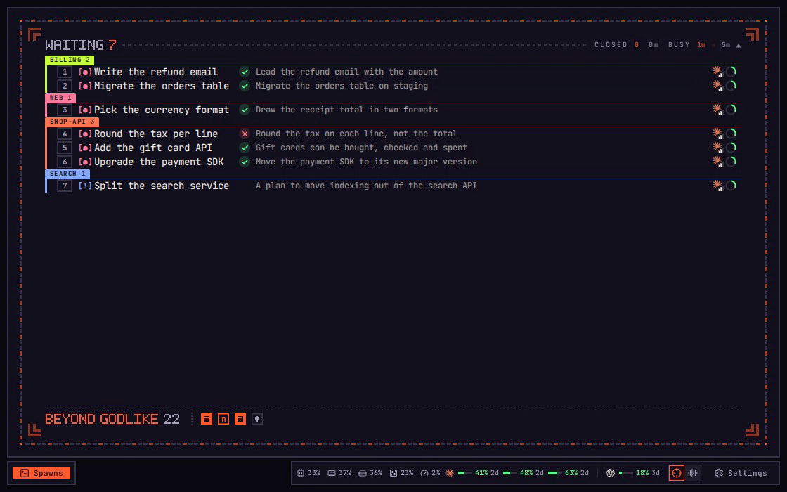
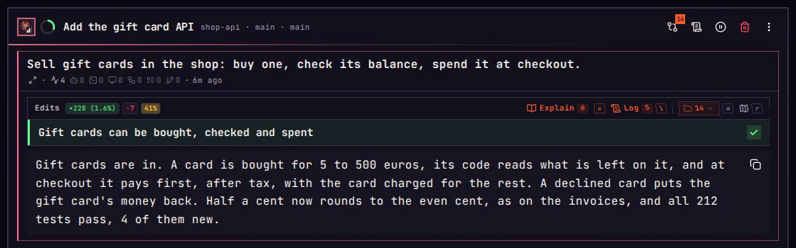
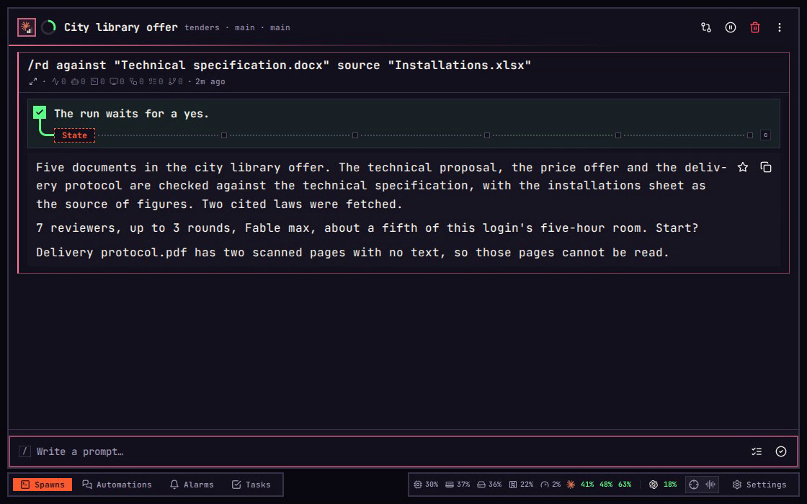

imba / features
imba features
One feature to a page: the idea behind it, and short films of it at work.
| Feature | The idea | On its page |
|---|---|---|
 Ultrafocus |
A higher level of focus, with just enough information. | 6 traps, 4 films |
 Edits |
Understand what a turn changed without reading its files. | 7 traps, 4 films |
 Document check |
Find where a set of documents contradicts itself before it goes out. | 13 chapters, 5 films |
 Document card Document card |
See what an agent did to a document as the document, not as a diff. | 5 chapters, 4 films |
Recorded in imba. Every spawn, repository and person in these films is made up.